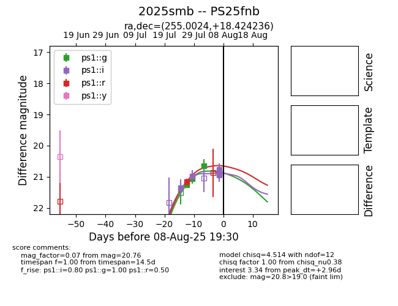

Target 2025smb at 2025-08-08 19:51, see:
TNS: wis-tns.org/object/2025smb
YSE: ziggy.ucolick.org/yse/transient_detail/2025smb
alt names
2025smb (yse,tns)
PS25fnb (panstarrs)
coordinates:
equatorial (ra, dec) = (255.0024,+18.42424)
galactic (l, b) = (38.3215,+32.59249)
photometry
last ps1::g=20.66, ps1::i=20.76, ps1::r=21.16
3 ps1::g, 6 ps1::i, 1 ps1::r detections
